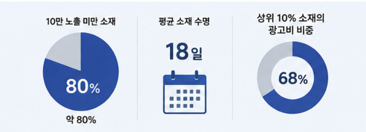
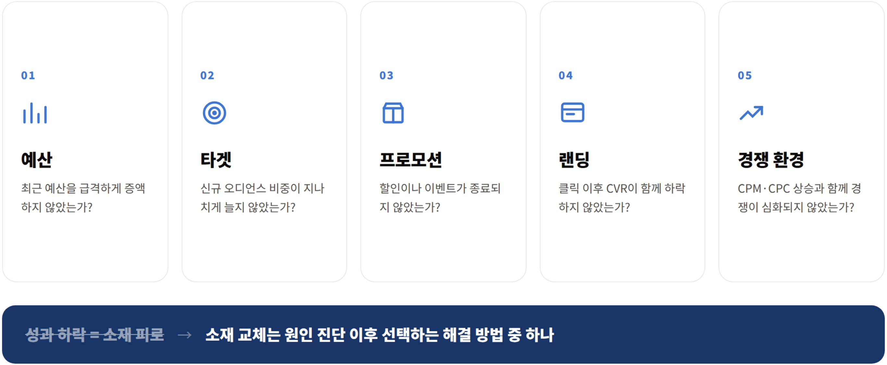

퍼포먼스 광고를 운영하다 보면 성과가 떨어지는 순간 가장 먼저 의심하는 것이 있습니다. 바로 광고 소재의 피로도(Creative Fatigue)입니다.
CTR이 떨어지거나 CPC가 상승하면 '소재를 교체해야 할 때가 됐다'고 판단하기 쉽습니다. 실제로 광고 업계에서는 일정 기간 이상 동일한 소재를 운영하면 효율이 떨어진다는 인식이 널리 퍼져 있습니다.
하지만 소재를 '몇 주마다' 교체해야 한다는 명확한 공식이 있는 것은 아닙니다. 중요한 것은 운영 기간보다 실제 성과가 어떻게 변화하고 있는지입니다.
01. 대부분의 광고 소재는 '지치기도 전에' 사라진다
최근 368개 Meta 광고, 약 4,845만 건의 노출과 68만 달러 규모의 광고비를 분석한 자료에서는 흥미로운 결과가 나타났습니다. 전체 소재의 약 80%가 10만 노출에 도달하지 못했으며, 평균적인 소재 수명은 약 18일이었습니다.
즉, 대부분의 소재가 충분한 노출을 확보하기도 전에 종료되거나 교체되고 있다는 의미입니다.
특히 눈여겨볼 부분은 상위 10%의 소재가 전체 광고비의 약 68%를 차지했다는 점입니다.

| 데이터 | 결과 |
|---|---|
| 분석 광고 | 368개 |
| 총 노출 | 약 4,845만 |
| 분석 광고비 | 약 $68.6만 |
| 10만 노출 미만 소재 | 약 80% |
| 평균 소재 수명 | 약 18일 |
| 상위 10% 소재의 광고비 비중 | 약 68% |
이는 모든 소재를 비슷한 비중으로 운영하는 것보다, 성과가 검증된 일부 '승자 소재'에 예산이 빠르게 집중되는 구조가 실제 광고 운영에서 나타난다는 것을 보여줍니다.
02. '2주가 지났으니 교체'는 좋은 기준이 아니다
그렇다면 소재 피로도는 어떻게 판단해야 할까요? 핵심은 기간이 아니라 지표의 흐름입니다.
예를 들어 동일한 소재를 3주간 운영했더라도 CTR이 소폭 하락하는 수준에서 CPA와 CVR이 안정적으로 유지되고 있다면 굳이 교체할 필요가 없습니다. 반대로 운영한 지 얼마 되지 않은 소재라도 CTR과 CVR이 동시에 하락하면서 CPA가 지속적으로 상승한다면 교체를 검토해야 합니다.
특히 소재 피로도를 판단할 때는 하나의 지표만 보는 것을 피해야 합니다.
① CTR → ② CPC → ③ CVR → ④ CPA
순으로 지표의 변화를 함께 살펴보면 소재 자체의 문제인지, 혹은 다른 요인에 의한 성과 하락인지 보다 정확하게 판단할 수 있습니다. CTR이 떨어졌다는 이유만으로 소재를 교체하기보다는 실제 비즈니스 성과까지 악화되고 있는지 확인하는 것이 중요합니다.
03. 성과가 떨어졌다면 소재부터 바꾸기 전에 확인해야 한다
광고 성과 하락의 원인은 소재 하나로만 설명되지 않습니다. 예산을 갑자기 증액했거나, 타겟이 변경됐거나, 프로모션이 종료됐을 때도 CTR·CPC·CPA가 크게 변할 수 있습니다. 랜딩페이지의 전환율이나 상품 경쟁력이 떨어진 경우에도 광고 효율은 자연스럽게 악화됩니다.
따라서 성과가 하락했을 때는 다음 5가지 항목을 먼저 점검하는 것이 좋습니다.

- 예산 — 최근 예산을 급격하게 증액하지 않았는가?
- 타겟 — 신규 오디언스 비중이 지나치게 늘어나지 않았는가?
- 프로모션 — 할인이나 이벤트가 종료되지 않았는가?
- 랜딩 — 광고 클릭 이후 CVR이 함께 하락하지 않았는가?
- 경쟁 환경 — CPM·CPC 상승과 함께 경쟁이 심화되지 않았는가?
결국 '성과 하락 = 소재 피로'라는 공식은 성립하지 않습니다. 소재 교체는 원인 진단 이후 선택해야 하는 하나의 해결 방법에 가깝습니다.
04. 좋은 소재 운영의 핵심은 '교체'가 아니라 '다음 위닝 소재'를 준비하는 것
소재 운영에서 중요한 것은 기존 광고를 언제 끌 것인지보다 다음에 어떤 소재를 승자로 만들 것인지입니다. 성과가 좋은 소재를 충분히 활용하면서 동시에 새로운 소재를 테스트하는 구조를 만들어야 합니다.
위닝 소재 운영 → 신규 소재 테스트 → 다음 위닝 소재 발굴 → 예산 확대
이 과정을 반복하면 기존 소재의 성과가 떨어진 뒤 급하게 새로운 광고를 만드는 상황을 줄일 수 있습니다. 특히 새로운 소재를 만들 때도 단순히 디자인을 바꾸는 것보다 '어떤 가설을 검증할 것인지'를 먼저 정하는 것이 중요합니다.
혜택을 강조했을 때 CTR이 높아지는지, 제품 중심 메시지가 전환율을 높이는지처럼 명확한 가설을 세우면 소재 테스트 자체가 하나의 데이터 자산으로 쌓입니다.
결국 광고 소재에는 정해진 유통기한이 없습니다. 중요한 것은 얼마나 오래 운영했는지가 아니라, '지금도 성과를 만들어내고 있는가'입니다.
소재 피로도를 관리하는 가장 좋은 방법 역시 무조건 자주 교체하는 것이 아니라, 성과가 검증된 소재는 충분히 활용하고 그와 동시에 다음 승자 소재를 지속적으로 발굴하는 것입니다. 퍼포먼스 마케팅에서 중요한 것은 '소재를 많이 만드는 것'이 아니라 성과를 만들어내는 소재를 계속해서 찾아가는 운영 구조를 만드는 데 있습니다.
출처: The Interconnections, Meta Creative Fatigue Benchmark